Silakan putar HP ke posisi landscape untuk melihat website dengan optimal.
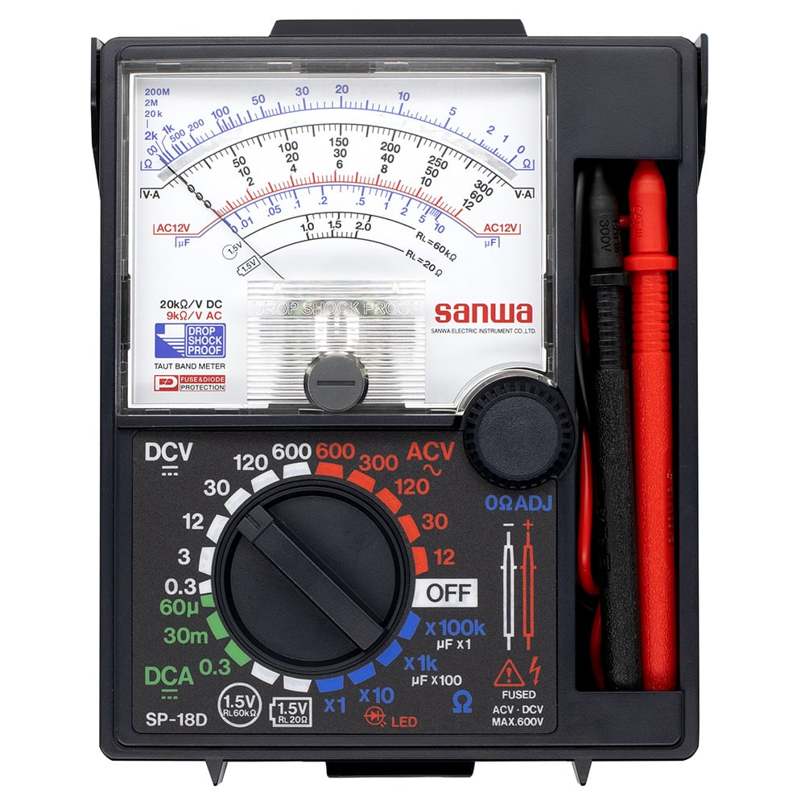
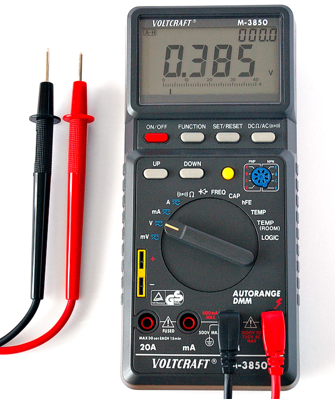
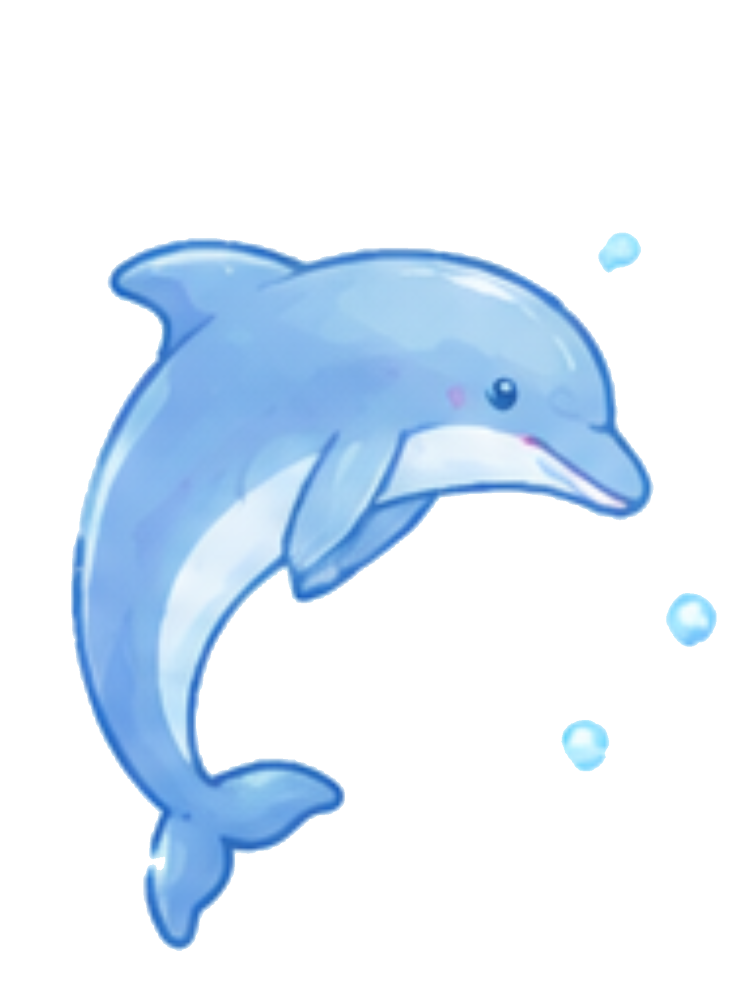
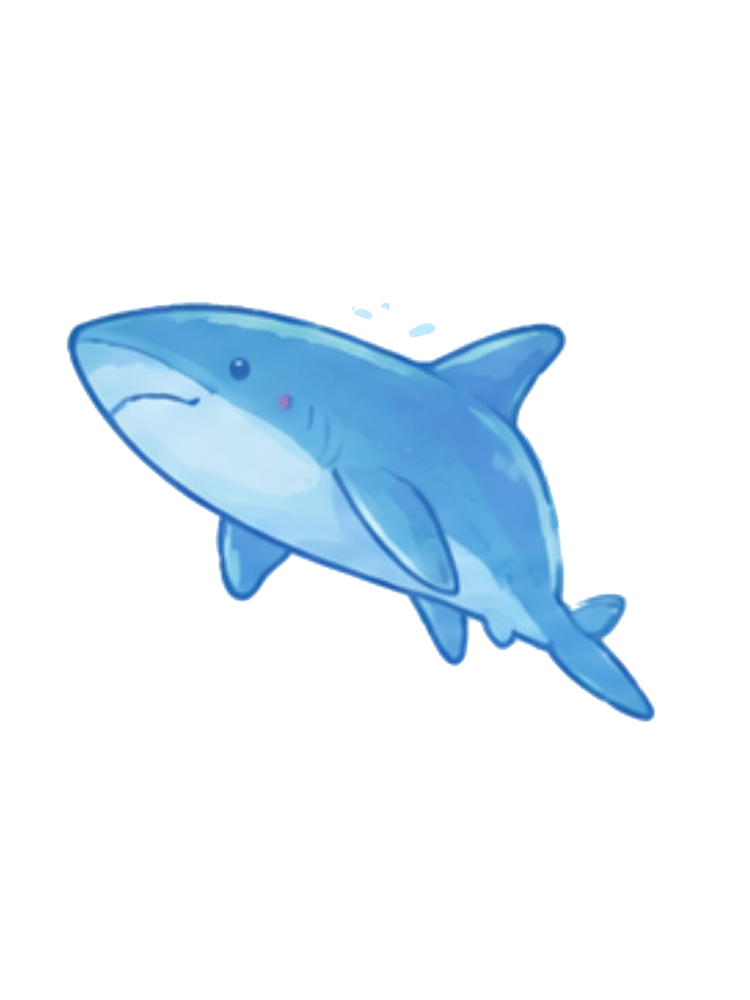
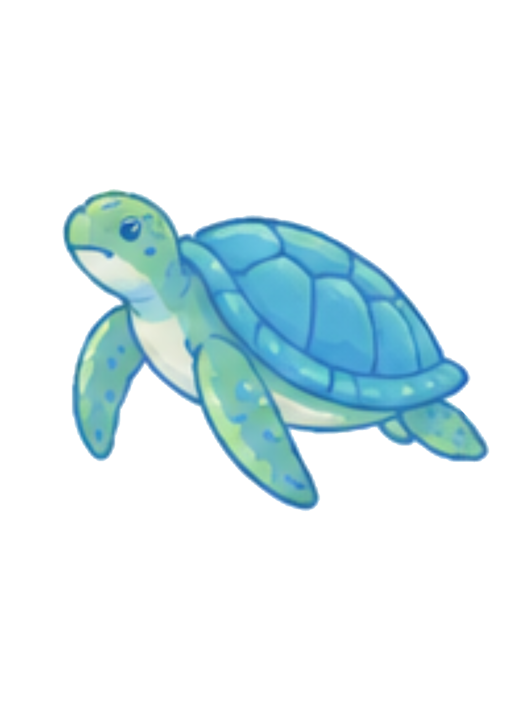
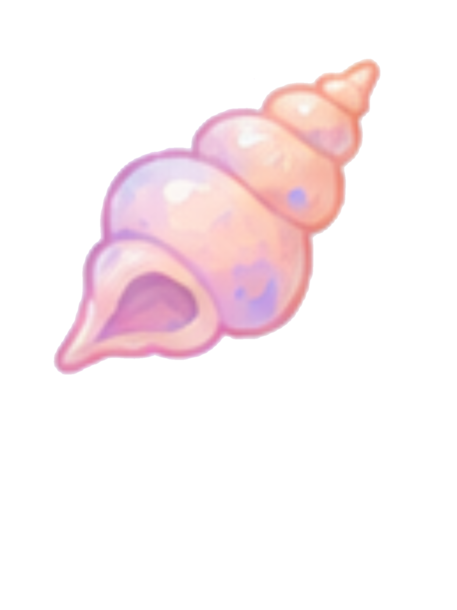
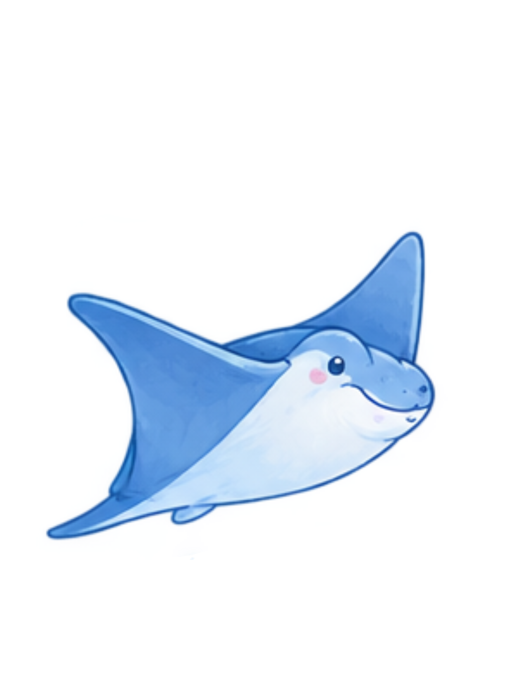
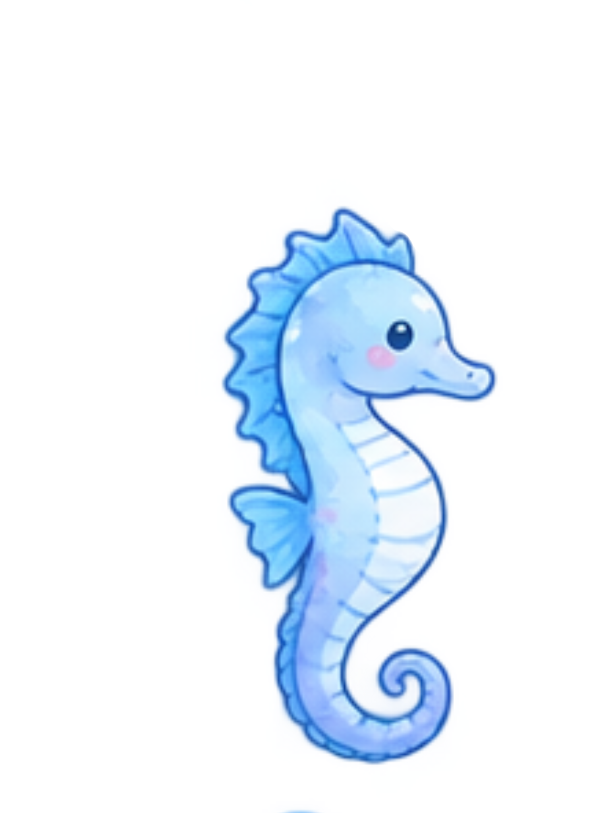
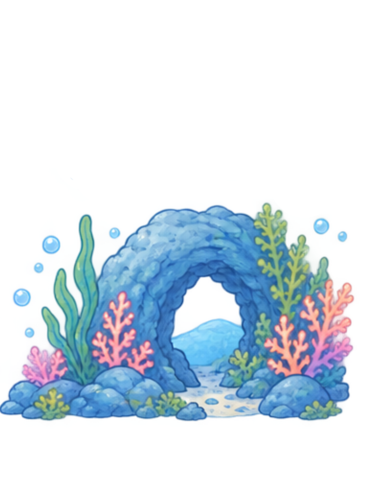
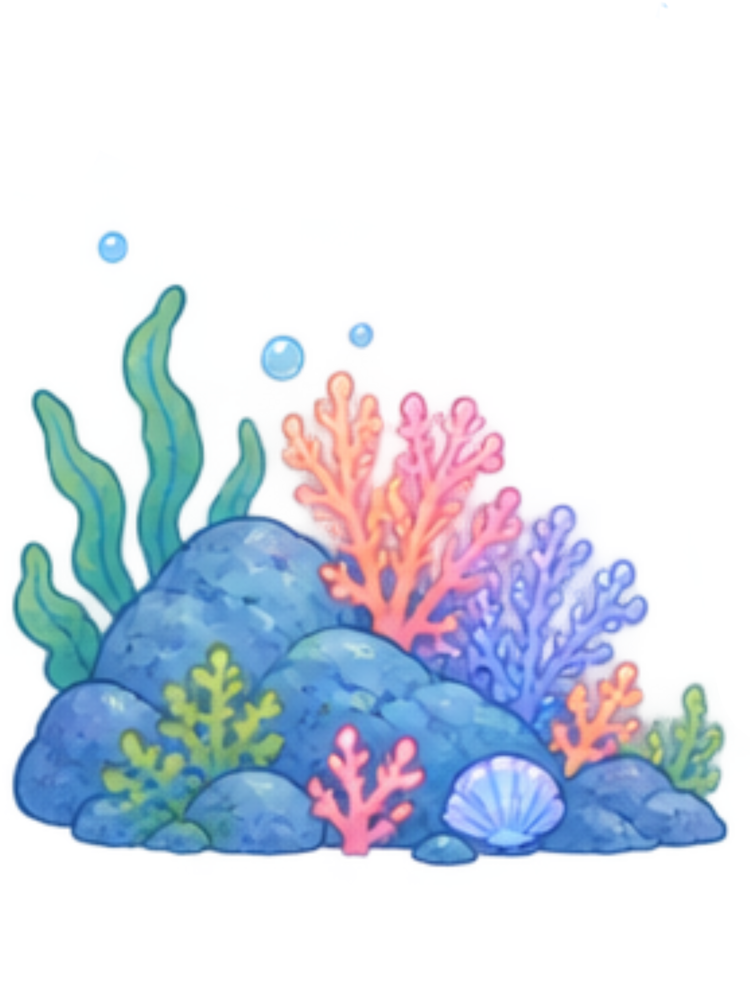
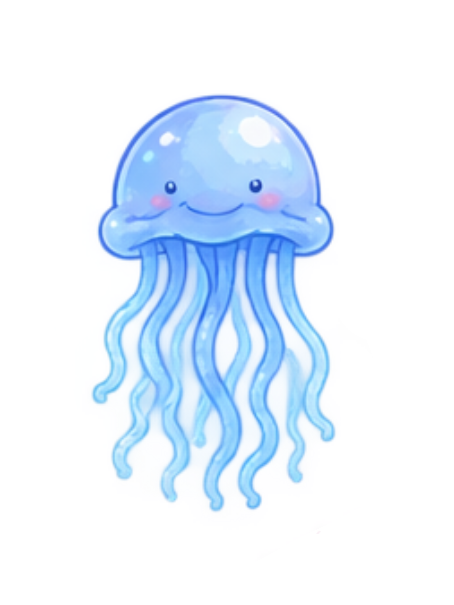
Multimeter adalah alat ukur elektronik yang digunakan untuk mengukur beberapa besaran listrik dalam satu alat. Multimeter juga sering disebut AVO meter, yaituu Ampere, Volt, Ohm.
Multimeter analog adalah alat ukur listrik yang menampilkan hasil pengukuran menggunakan jarum penunjuk yang bergerak pada skala angka. Multimeter analog dapat digunakan untuk mengukur beberapa besaran listrik, seperti tegangan (Volt), arus (Ampere), dan hambatan (Ohm). Saat digunakan, pengguna perlu melihat posisi jarum pada skala yang sesuai dengan pengaturan alat untuk mengetahui hasil pengukurannya.
Multimeter digital adalah alat ukur listrik yang menampilkan hasil pengukuran dalam bentuk angka pada layar digital. Seperti multimeter analog, multimeter digital dapat digunakan untuk mengukur tegangan, arus, dan hambatan, serta pada beberapa jenis alat memiliki fungsi pengukuran tambahan. Hasil pengukuran pada multimeter digital umumnya lebih mudah dibaca karena nilai pengukuran langsung ditampilkan dalam bentuk angka.
| No. | Perbedaan | Multimeter Analog | Multimeter Digital |
|---|---|---|---|
| 1 | Tampilan hasil | Menggunakan jarum dan skala | Menggunakan angka pada layar |
| 2 | Cara membaca | Melihat posisi jarum pada skala | Membaca angka yang muncul pada layar |
| 3 | Kemudahan membaca | Membutuhkan ketelitian saat membaca skala | Lebih mudah dibaca |
| 4 | Perubahan nilai | Jarum bergerak mengikuti peubahan nilai | Angka pada layar berubah mengikuti nilai |
| 5 | Sumber daya | Tergantung jenis dan fungsi alat | Umum menggunakan baterai |
Volt adalah satuan untuk mengukur tegangan listrik. Gampangnya, tegangan adalah dorongan yang membuat arus listrik dapat mengalir.
Ampere adalah satuan untuk mengukur kuat arus listrik, yaitu seberapa banyak aliran muatan listrik yang melewati suatu titik dalam satu detik.
Ohm adalah satuan untuk mengukur hambatan listrik. Hambatan adalah sesuatu yang menghambat atau membatasi aliran arus listrik.
AC (Arus Bolak-Balik) adalah arus listrik yang arah dan nilainya berubah secara berkala. Contohnya:Listrik rumah tangga yang disuplai oleh PLN, oven listrik dan setrika.
DC (Arus Searah) adalah arus listrik yang mengalir dalam satu arah. Contohnya:Solar cell, baterai ponsel dan powerbank
| Simbol/Menu | Fungsi |
|---|---|
| V⎓ / DVC | Mengukur tegangan DC |
| V~ / ACV | Mengukur tegangan AC |
| Ω | Mengukur hambatan |
| A / mA / µA | Mengukur arus listrik |
| Continuity | Mengecek apakah kabel rangkaian tersambung atau terputus |
| Hz | Mengukur frekuensi listrik |
| F / Cap | Mengukur kapasitas kapasitor |
| ON / OFF | Menyalakan dan mematikan multimeter |
Tidak semua multimeter memiliki menu tersebut. Multimeter sederhana biasanya hanya memiliki beberapa fungsi dasar.
| Komponen | Fungsi sederhana | Cara kerja |
|---|---|---|
| Resistor | Membatasi arus | Memberikan hambatan terhadap aliran arus |
| Potensiometer | Mengatur nilai hambatan | Nilai hambatan berubah ketika knop/gesernya diubah |
| Kapasitor | Menyimpan muatan listrik | Menyimpan lalu melepaskan muatan listrik |
| Dioda | Mengarahkan arus | Umumnya membiarkan arus mengalir terutama dalam satu arah |
| LED | Menghasilkan cahaya | Mengeluarkan cahaya ketika dialiri arus dengan arah dan kondisi yang sesuai |
| Transistor | Sakelar/penguat sinyal | Mengendalikan arus yang lebih besar menggunakan sinyal pada terminal pengendalinya |
| Induktor | Menyimpan energi dalam medan magnet | Menghasilkan medan magnet ketika dialiri arus |
| Saklar(Switch) | Menyambung/memutus rangkaian | Saat ON rangkaian tersambung, saat OFF rangkaian terputus |
| Baterai | Sumber ebergi listrik DC | Mengubah energi kimia menjadi energi listrik |
| Sakering(fuse) | Perlindungan rangkaian | Putus ketika arus berlebbian sehingga rangkaian terlindungi |
| Heatsink | Membuang panas komponen elektronik | Panas diserap lalu disebarkan ke udara |
| Transformator | Mengubah tegangan AC | Medan magnet dari kumparan primer menginduksi tegangan pada kumparan sekunder |
Memberikan hambatan terhadap aliran arus listrik.
Mengatur besar kecilnya hambatan dan arus listrik.
Menyimpan dan melepaskan muatan listrik.
Mengalirkan arus listrik hanya dalam satu arah.
Mengubah energi listrik menjadi cahaya.
Mengatur atau memperkuat aliran arus listrik.
Menyimpan energi dalam bentuk medan magnet.
Menyambung dan memutus aliran listrik.
Menyediakan energi listrik untuk rangkaian.
Melindungi rangkaian dari arus listrik berlebih.
Membantu membuang panas dari komponen elektronik.
Mengubah tingkat tegangan listrik AC.
1.Siapkan multimeter dan objek yang akan diukur. 2.Hubungkan kabel probe hitam ke terminal COM. 3.Hubungkan probe merah ke terminal V. 4.Tentukan jenis tegangan yang akan diukur, yaitu DC (V⎓) atau AC (V~). 5.Atur pilihan/range pengukuran sesuai perkiraan tegangan yang akan diukur. 6.Tempelkan kedua probe pada titik yang ingin diukur. 7.Amati nilai tegangan yang ditampilkan pada layar multimeter.
1.Siapkan multimeter dan rangkaian yang akan diukur. 2.Hubungkan probe hitam ke terminal COM. 3.Hubungkan probe merah ke terminal A atau mA, sesuai perkiraan besar arus dan terminal yang tersedia pada multimeter. 4.Pilih pengukuran arus DC (A⎓) atau AC (A~) sesuai jenis arus yang diukur. 5.Putus rangkaian pada titik pengukuran. 6.Hubungkan multimeter secara seri dengan rangkaian. 7.Pilih range yang sesuai, kemudian amati nilai arus pada layar.
1. Siapkan multimeter dan resistor/komponen yang akan diukur. 2.Hubungkan probe hitam ke terminal COM. 3.Hubungkan probe merah ke terminal V/Ω. 4.Putar pemilih fungsi ke Ω. 5.Pastikan komponen yang diukur tidak sedang dialiri sumber listrik. 6.Tempelkan kedua probe pada kedua ujung resistor atau komponen. 7.Amati nilai hambatan yang ditampilkan pada layar multimeter.
PSU (Power Supply Unit) adalah perangkat yang berfungsi mengubah dan menyediakan sumber listrik yang dibutuhkan oleh komponen komputer. PSU menerima listrik dari sumber AC dan mengubahnya menjadi beberapa tegangan DC yang digunakan oleh komponen komputer. Pada komputer, PSU dapat menyediakan beberapa keluaran tegangan, seperti +12 V, +5 V, dan +3,3 V.
| No. | Komponen Elektronika | Fungsi |
|---|---|---|
| 1 | Resistor | Membatasi atau mengatur arus listrik |
| 2 | Kapasitor | Menyimpan muatan dan membantu penyaringan tegangan |
| 3 | Dioda | Mengarahkan arus agar mengalir satu arah |
| 4 | Transistor/MOSFET | Mengatur atau melakukan switching pada rangkaian |
| 5 | Induktor/Coil | Membantu penyaringan dan pengaturan arus |
| 6 | Transformator | Mengubah tingkat tegangan listrik |
| 7 | Sekring/Fuse | Melindungi rangkaian dari arus berlebih |
| 8 | Heatsink | Membantu membuang panas dari komponen |
Secara sederhana, proses kerja PSU dapat digambarkan: Listrik AC → Penyearahan → Pengaturan/konversi → Penyaringan → Tegangan DC keluaran PSU menerima listrik AC dari sumber listrik. Listrik tersebut kemudian diproses melalui rangkaian di dalam PSU sehingga menghasilkan tegangan DC yang sesuai untuk komponen komputer.
PSU bekerja dengan mengubah listrik AC menjadi listrik DC yang lebih sesuai untuk digunakan oleh komponen elektronik.
Listrik AC masuk ke PSU.
AC diubah menjadi DC berdenyut.
Mengurangi riak pada tegangan.
Menstabilkan tegangan listrik.
Menghasilkan tegangan DC untuk perangkat.
Jika ingin belajar,kalian bisa mencoba mengukur besaran PSU. perhatikan langkah-langkah dibawah ini.